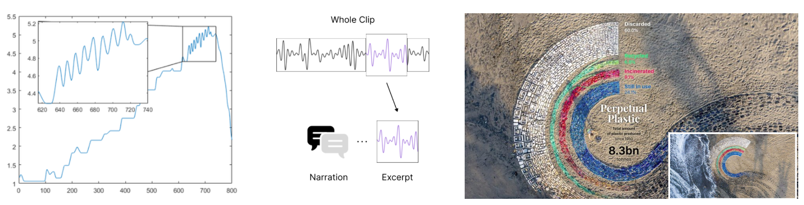

Annotation Layers in Data Representations
| Description |
Coauthored undergraduate research with Professor Jordan Wirfs-Brock and ATLAS PhD Student, Sandra Bae. |
| Abstract |
Annotations are a critical component of visualizations, helping viewers interpret the visual representation and highlighting critical data insights. Despite its significant role, we lack an understanding of how annotations can be incorporated into other data representations, such as physicalizations and sonifications. Given the emergent nature of these representations, sonifications and physicalizations lack formalized conventions (e.g., design space, vocabulary) that can introduce challenges for audiences to interpret the intended data encoding. To address this challenge, this work focuses on how annotations can be more tightly integrated into the design process of creating sonifications and physicalization. In an exploratory study with 13 designers, we explore how visualization annotation techniques can be adapted to sonic and physical modalities. Our work highlights how annotations for sonification and physicalizations are inseparable from their data encodings |